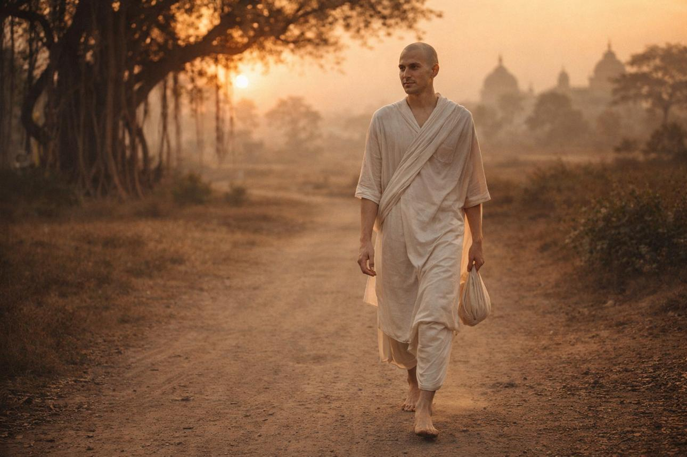
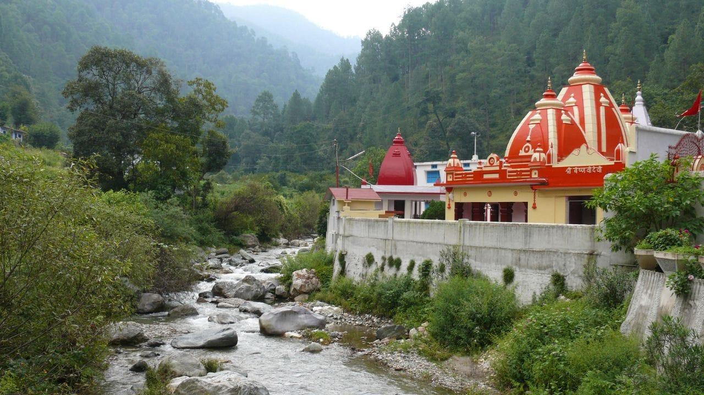
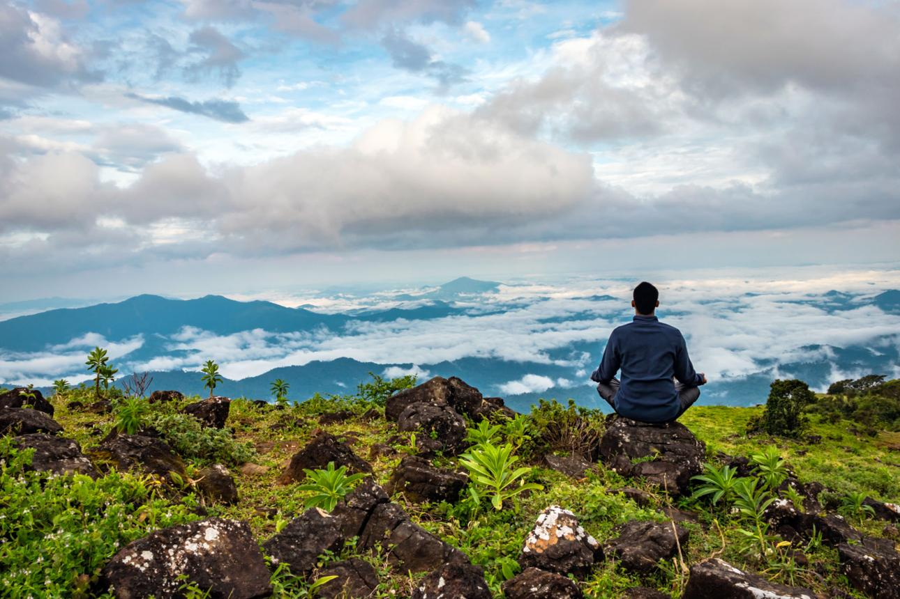
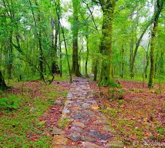
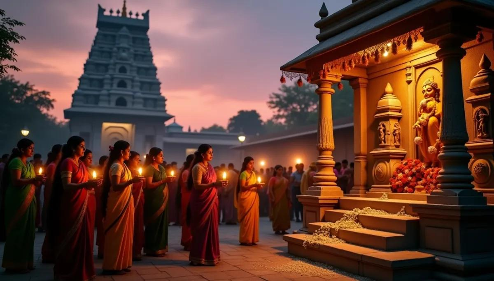
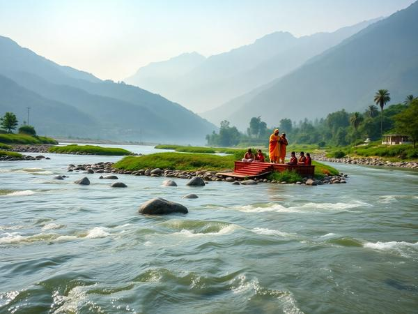

Arrival
Arrival in Delhi
A private arrival into the subcontinent, with the pace slowed from the first evening — the same chaotic beauty that greeted Jobs in the summer of 1974.
Plan This Moment →
A soulful journey through ashram silence, sacred Himalayan paths, devotion, Indian wisdom, and the spiritual atmosphere that transformed a 19-year-old seeker into the mind behind Apple.
In 1974, a 19-year-old Steve Jobs boarded a plane to India with one purpose — not business, not tourism, but spiritual searching. He walked to Neem Karoli Baba's ashram at Kainchi Dham. He wandered Vrindavan's ancient lanes. He sat in Himalayan silence and came back transformed.
The Steve Jobs Way India experience is inspired by that sacred chapter — a journey through ashram courtyards, sacred river light, Himalayan paths, and the quiet energy that shaped one of humanity's greatest creative minds.
A private travel narrative shaped by the ashram chapter that linked technology, meditation, and Indian wisdom.
Ashram courtyards, sacred pathways, mountain air, and the devotional stillness of Neem Karoli Baba's sanctuary.
Mornings by sacred rivers, unhurried mountain walks, guided reflection, and time reserved for silence.
Premium, discreet, and cinematic, with local guidance around timing, access, meditation, and reflection.


Walk through the sacred ashram of Neem Karoli Baba — the place Jobs sought, the courtyards, mountain air, and devotional silence still alive today.
Explore Walk
Experience the Himalayan rivers where Jobs walked barefoot — where water sound, mountain air, and morning light create a deep spiritual pause.
Find Stillness
A calm meditation-inspired experience shaped around silence, reflection, breathwork, and inner clarity — the practice Jobs carried home to California.
Begin Practice
Feel the connection between Indian classical philosophy, mantra, devotion, and the intuitive energy that inspired a generation of technology.
Hear The Evening
Move through quiet mountain paths, old ashram corners, spiritual textures, and cinematic Himalayan frames — as Jobs once wandered on foot.
Walk The Path
Journaling, intuition, slow travel, and deep personal reflection designed for visionaries who seek more than sightseeing — just as Jobs did.
Reflect PrivatelyThis is not generic India sightseeing. The stay language is quiet, private, and retreat-led: Himalayan mornings, meditation courtyards, sacred river edges, and restorative interiors.

Your base is designed around stillness, early mountain light, easy access to ashram storytelling, and a premium retreat rhythm rather than rushed sightseeing — exactly the pace that allowed Jobs to transform.

Ashram-inspired forms, quiet corners, and the devotional architecture of sacred Himalayan India.

River sound, Himalayan air, and a slow welcome into the day.

Shaded ashram paths, old stone, and cinematic Himalayan foothill textures.

Art, sacred geometry, and memory without using official imagery or portraits.
A private arrival into the subcontinent, with the pace slowed from the first evening — the same chaotic beauty that greeted Jobs in the summer of 1974.
Plan This Moment →
A calm introduction beside the sacred river, setting the mood for silence, sacred sound, and reflection — the spiritual palette of Jobs' Indian summer.
Plan This Moment →A guided storytelling walk through ashram textures, devotional courtyards, Himalayan paths, and the sacred space that Steve Jobs travelled 7,000 miles to find.
Plan This Moment →A private meditation-inspired session built around breath, stillness, and inner clarity — the practice Jobs returned to throughout his life as Apple's creative foundation.
Plan This Moment →
An intimate evening shaped by Indian philosophy, devotional chanting, and the creative energy that Jobs said was more powerful than any intellectual concept he had encountered.
Plan This Moment →
Seven sacred chapters from arrival to departure, composed around Delhi, Kainchi Dham, Himalayan paths, meditation, Indian wisdom, and creative revelation.
A soft landing into the subcontinent with the journey framed around meaning, not sightseeing — the same arrival Jobs made in the summer of 1974.
River light, mountain air, and a private orientation into the spiritual mood of Himalayan India.
A storytelling walk through ashram paths, devotional courtyards, mountain walls, and the sacred memory of the Maharaj-ji.
A calm practice of breath, silence, reflection, and inner stillness — the discipline Jobs maintained for the rest of his life.
An intimate session with Indian philosophy, devotional chant, sacred geometry, and the creative resonance that fuelled Apple's design language.
A slow walk through Himalayan edges, old ashram corners, and personal reflection prompts drawn from Jobs' own interviews about India.
Journaling, intuition-led reflection, and a closing circle before departure — carrying the spirit of 1974 back into the modern world.
Premium, private, cinematic, and deeply specific to the 1974 India that Jobs walked — not generic India tourism, but a soulful route through ashram silence, mountain light, meditation, wisdom, and creativity.
Begin The JourneyQuiet spaces shaped for breath, pause, and inner attention at Kainchi Dham.
Sacred mountain mornings framed by foothill air and gentle Himalayan light.
Ashram courtyards, sacred geometry, and the architecture of reflection and devotion.
Devotional chant, philosophy, and Indian classical thought as part of the creative story.
A guided narrative rooted in the authentic 1974 India chapter of Jobs' life.
Slow movement through forested Himalayan paths and old ashram corners.
Warm overlays, aged textures, and a cinematic 1970s India mood throughout.
Journaling, listening, silence, and personal creative reset — as Jobs did in 1974.

A short soulful introduction to mountain-side calm, ashram-inspired storytelling, and the meditation spaces Jobs sought in 1974.
Request →A deeper Himalayan journey through Neem Karoli Baba's ashram inspiration, meditation, Indian wisdom, and creative reflection.
Request →
A premium slow-travel experience combining Himalayan India, silence, wisdom, journaling, yoga, and the soulful storytelling of 1974.
Request →Access is tailored for select private clients seeking Himalayan India, silence, Indian wisdom, and the creative transformation that shaped one of history's greatest visionaries.
Step into Himalayan India, ashram silence, sacred mountain light,
Indian wisdom, and a journey shaped by the spirit that built Apple's soul.